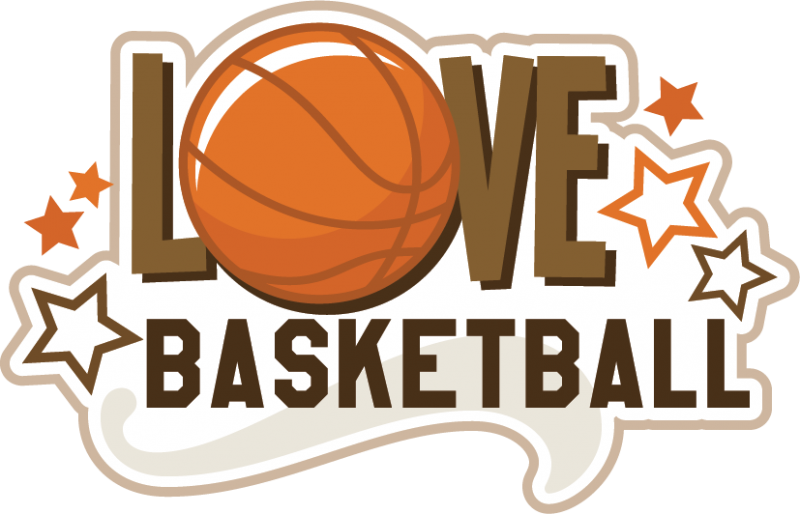

The Ball
The caption 1
Basketball is a team sport played by two teams of five players on a rectangular court. The objective is to shoot a ball through a hoop
18 inches (46 cm) in diameter and mounted at a height of 10 feet (3.048 m) to backboards at each end of the court. The game was invented in 1891 by Dr. James Naismith, who would be the first basketball coach of the Kansas Jayhawks, one of the most successful programs in the game's history.Link to the top player

The caption 2
In early December 1891, Canadian Dr. James Naismith,[4] a physical education professor and instructor at the International Young Men's Christian Association Training School[5] (YMCA) (today, Springfield College) in Springfield, Massachusetts was trying to keep his gym class active on a rainy day. He sought a vigorous indoor game to keep his students occupied and at proper levels of fitness during the long New England winters. After rejecting other ideas as either too rough or poorly suited to walled-in gymnasiums, he wrote the basic rules and nailed a peach basket onto a 10-foot (3.0 m) elevated track. In contrast with modern basketball nets, this peach basket retained its bottom, and balls had to be retrieved manually after each "basket" or point scored; this proved inefficient, however, so the bottom of the basket was removed,[6] allowing the balls to be poked out with a long dowel each time.
